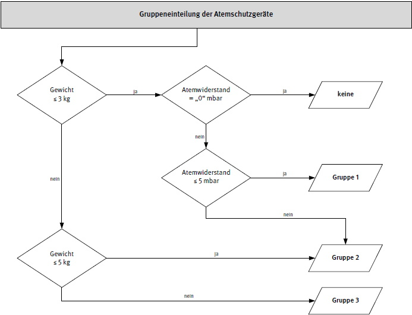

Der Einsatz von Atemschutzgeräten bedeutet im Allgemeinen eine zusätzliche Beanspruchung für die atemschutzgerättragende Person.
Die meisten Atemschutzgeräte machen die arbeitsmedizinische Vorsorge gemäß "Verordnung zur arbeitsmedizinischen Vorsorge" (ArbMedVV) erforderlich. In der Arbeitsmedizinischen Regel AMR 14.2 "Einteilung von Atemschutzgeräten in Gruppen" werden die Atemschutzgeräte in die Gruppen 1 bis 3 eingeteilt. Eine Pflichtvorsorge ist beim Tragen von Geräten erforderlich, die in die Gruppen 2 und 3 eingeteilt sind. Für die Gruppe 1 ist durch den Unternehmer oder die Unternehmerin eine Angebotsvorsorge anzubieten. Für Atemschutzgeräte, die keiner Gruppe zugewiesen werden, hat die Unternehmerin oder der Unternehmer auf Verlangen der beschäftigten Person eine Wunschvorsorge zu ermöglichen.
Bei der Vorsorge sind die Arbeitsplatzverhältnisse, wie Arbeitsschwere, Klima, und die Gebrauchsdauer des zu gebrauchenden Atemschutzgerätes zu berücksichtigen. Grundlage einer angemessenen arbeitsmedizinischen Vorsorge ist die Gefährdungsbeurteilung.
Mit der Durchführung der arbeitsmedizinischen Vorsorge ist entweder eine Fachärztin oder ein Facharzt für Arbeitsmedizin oder ein Arzt oder eine Ärztin mit der Zusatzbezeichnung "Betriebsmedizin" zu beauftragen.
Die arbeitsmedizinische Vorsorge beinhaltet ein ärztliches Beratungsgespräch mit Anamnese, einschließlich Arbeitsanamnese sowie Untersuchungen, soweit diese für die individuelle Aufklärung und Beratung erforderlich sind und die beschäftigte Person diese Untersuchungen nicht ablehnt. Sollen Untersuchungen stattfinden, kann der Arzt oder die Ärztin hierzu die Empfehlungen aus der DGUV Information 240-260 "Handlungsanleitung für arbeitsmedizinische Untersuchungen nach dem DGUV Grundsatz G 26 "Atemschutzgeräte" heranziehen.
Der oder die Beschäftigte erhält eine entsprechende Vorsorgebescheinigung und auf Wunsch das Ergebnis und den Befund der arbeitsmedizinischen Vorsorge.
Der Unternehmer oder die Unternehmerin erhält die Information über die Teilnahme an der Vorsorge.
Die erste Vorsorge muss gemäß der arbeitsmedizinischen Regel (AMR) 2.1 "Fristen für die Veranlassung/das Angebot arbeitsmedizinischer Vorsorge" innerhalb von drei Monaten vor Aufnahme der Tätigkeit veranlasst oder angeboten werden.
In Tabelle 23 werden die in der DGUV Information 240-260 für die weiteren Pflicht- und Angebotsvorsorgen zutreffenden Fristen genannt.
Tabelle 23 Fristen gemäß DGUV Information 240-260
| atemschutzgerättragende Person | zweite Vorsorge | weitere Vorsorge |
| bis 50 Jahre | 12 Monate | 36 Monate |
| über 50 Jahre: Gerätegewicht bis 5 kg Gerätegewicht über 5 kg |
12 Monate 12 Monate |
24 Monate 12 Monate |
Diese Fristen können im Einzelfall vom untersuchenden Arzt verkürzt, jedoch in keinem Falle verlängert werden.
Nach mehrwöchiger Erkrankung oder körperlicher Beeinträchtigung kann vor dem Gebrauch eines Atemschutzgerätes eine erneute Vorsorge vor Ablauf der Wiederholungsfrist notwendig werden.
Informationen für Betriebe im Anwendungsbereich des § 2 des Bundesberggesetzes sind der Bergverordnung zum gesundheitlichen Schutz der Beschäftigten (Gesundheitsschutz-Bergverordnung - GesBergV) zu entnehmen.
Die Pflichtvorsorge muss vor Aufnahme der Tätigkeit und anschließend in regelmäßigen Abständen vom Unternehmer oder der Unternehmerin veranlasst werden. Die Tätigkeit darf nur ausgeübt werden, wenn Beschäftigte zuvor an einer Pflichtvorsorge teilgenommen haben.
Die Angebotsvorsorge muss vor Aufnahme der Tätigkeit und anschließend in regelmäßigen Abständen von der Unternehmerin oder vom Unternehmer angeboten werden. Wird das Angebot von der oder dem Beschäftigten nicht wahrgenommen, ist der Unternehmer oder die Unternehmerin weiterhin verpflichtet, regelmäßig Angebotsvorsorge anzubieten.
Über die Vorsorgeanlässe des Anhangs der ArbMedVV hinaus hat die Unternehmerin oder der Unternehmer den Beschäftigten auf ihren Wunsch hin regelmäßig arbeitsmedizinische Vorsorge zu ermöglichen.
Mit einer Vorsorgebescheinigung teilt der Betriebsarzt oder die Betriebsärztin der Unternehmerin oder dem Unternehmer sowie dem oder der Beschäftigten mit, wann und aus welchem Anlass bzw. aus welchen Anlässen eine arbeitsmedizinische Vorsorge stattgefunden hat und wann die nächste arbeitsmedizinische Vorsorge notwendig ist.
Die Vorsorgebescheinigung enthält keine Angaben zu medizinischen Befunden und Diagnosen oder Aussagen zur gesundheitlichen Bedenklichkeit oder Unbedenklichkeit der Tätigkeit für die jeweilige Person. (siehe AMR 6.3 "Vorsorgebescheinigung")
Der Unternehmer bzw. die Unternehmerin führt eine Vorsorgekartei. Sie enthält die Angaben, wann und aus welchen Anlässen arbeitsmedizinische Vorsorge stattgefunden hat. Die Beschäftigten erhalten bei Beendigung des Beschäftigungsverhältnisses eine Kopie der sie betreffenden Angaben. Die ärztlichen Unterlagen der Vorsorge sind für 10 Jahre nach der letzten Vorsorge aufzubewahren (siehe AMR 6.1. "Fristen für die Aufbewahrung ärztlicher Unterlagen").
Bei dem Gebrauch von Atemschutzgeräten der Gruppe 2 oder 3 in Kombination mit Tätigkeiten, wie zum Beispiel
muss der Unternehmer oder die Unternehmerin im Rahmen der Gefährdungsbeurteilung überprüfen, ob für die atemschutzgerättragende Person eine Eignungsuntersuchung erforderlich ist. Bestandteil der Eignungsuntersuchung sind ein Beratungsgespräch, Anamnese und eine Untersuchung. Für die Eignungsuntersuchung bietet sich der DGUV Grundsatz G 26 "Atemschutzgeräte" an.
Die Eignungsuntersuchung sollte von einem Arzt oder einer Ärztin durchgeführt werden, der oder die über die notwendigen Kenntnisse der jeweiligen Arbeitsbedingungen verfügt.
Der oder die Beschäftigte erhält den Befund der Eignungsuntersuchung und eine ärztliche Bescheinigung über die Eignung, die an den Unternehmer bzw. die Unternehmerin weitergeleitet werden sollte. Der Unternehmer oder die Unternehmerin benötigt diese Bescheinigung für die Entscheidung, ob der oder die Beschäftigte für die vorgesehene Tätigkeit eingesetzt werden kann.
Die Gruppeneinteilung der Atemschutzgeräte erfolgt nach dem Gerätegewicht und den Druckdifferenzen bei der Einatmung sowie der Ausatmung (Einatemwiderstand, Ausatemwiderstand). Für die Zuordnung des Atemschutzgerätes zu einer Gruppe ist die Überschreitung bereits eines der beiden Grenzwerte (Gerätegewicht oder Atemwiderstand) maßgebend. Die Belastung durch die Geräte steigt von Gruppe 1 nach Gruppe 3 an.
Das für die Einteilung in die Gruppen zu berücksichtigende Gerätegewicht beinhaltet die von der atemschutzgerättragenden Person am Körper getragenen Gewichtsanteile des einsatzbereiten Atemschutzgerätes.

Abb. 13 Gruppeneinteilung der Atemschutzgeräte nach AMR 14.2
Der für die Einteilung in die Gruppen zu berücksichtigende Atemwiderstand für Einatmung oder Ausatmung wird bei einem Atemminutenvolumen von 20 × 1,5 l/min bei dynamischer Veratmung (sinusförmig) oder einem kontinuierlichen Volumenstrom von 95 l/min ermittelt.
Beispiele zur typischen Zuordnung in die Gruppe 1 bis 3 sind in Tabelle 21 zu finden.
Schutzanzüge in Verbindung mit Geräten der Gruppe 3 und Regenerationsgeräte über 5 kg stellen eine zusätzliche Beanspruchung für die atemschutzgerättragende Person dar. Bei Schutzanzügen ist die Beanspruchung durch Gewicht, Mikroklima, psychische Einflüsse (Platzangst) und Umgebungseinflüsse (Notfallsituation) gegeben. Bei Regenerationsgeräten über 5 kg resultiert die Beanspruchung aus der langen Gebrauchsdauer und der zunehmenden Erwärmung des Einatemgases.
Eine Vorsorge kann unterbleiben bei Einsatz von: